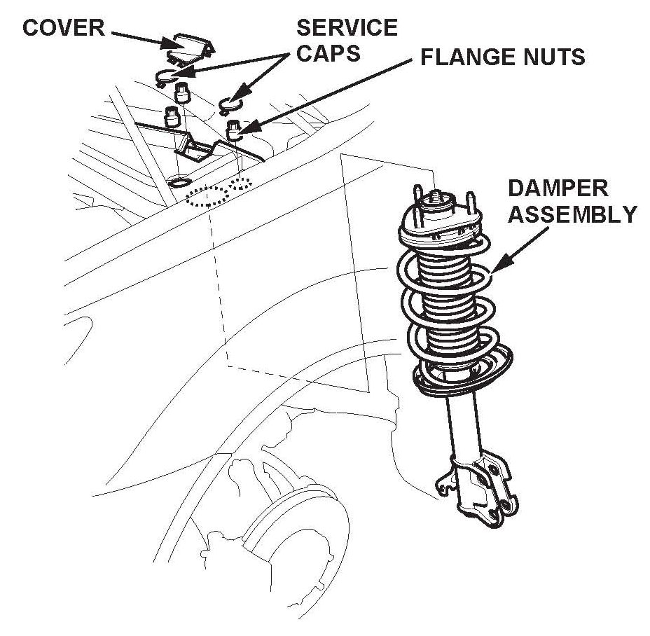

Campaign - Corroded Front Strut Coil Connectors
11-006June 24, 2011
Applies To:
See VEHICLES AFFECTED
Product Update: Front Damper Coil Connector Corrosion/ADS Indicator Is On
(Supersedes 11-006, dated May 14, 2011, to revise the information marked by asterisks)
Product Update: Front Damper Coil Connector Corrosion/ADS Indicator Is On)
REVISION SUMMARY
*Under VEHICLES AFFECTED, some 2007 models were added.*
BACKGROUND
On some vehicles with the active damper system (ADS), the damper coil connectors on the bottom of the front dampers do not have enough corrosion protection. In areas where road salt* is used, the damper coil connectors are susceptible to corrosion. Over time, excessive corrosion may cause the damper coil connectors to fail, resulting in a loss of damper fluid metering. Corroded front damper coil connectors can also cause the ADS indicator to stay on with one or more of these DTCs:
^ DTC 5-5: Active damper control unit internal right-front damper coil drive circuit stuck off
^ DTC 5-6: Active damper control unit internal left-front damper coil drive circuit stuck off
^ DTC 6-1: Active damper control unit internal right-front damper coil drive circuit current lower than expected
^ DTC 6-2: Active damper control unit internal left-front damper coil drive circuit current lower than expected
^ DTC 7-9: Active damper control unit internal circuit malfunction
**Road salt is commonly used in an area known as the salt belt." As shown in the shaded area of the map, the salt belt includes these states: Connecticut, Delaware, Illinois, Indiana, Iowa, Kentucky, Maine, Maryland, Massachusetts, Michigan, Minnesota Missouri, New Hampshire, New Jersey, New York, Ohio, Pennsylvania, Rhode Island, Vermont, Virginia, West Virginia, Wisconsin, and Washington D.C.**
VEHICLES AFFECTED
*2007 MDX w/Sport Package*
2008 MDX w/Sport Package
2009 MDX w/Sport Package
Not all vehicles with the Sport Package are affected.
Only those vehicles that were sold into or are currently registered in areas where road salt is used are affected by this campaign. To verify vehicle eligibility, you must check at least one of these items:

^ The client has a notification letter.
^ The vehicle is shown as eligible on an iN VIN status inquiry.
If the client has a notification letter, the vehicle is eligible for the campaign even if the vehicle is currently registered or located outside of the "salt belt."
In addition, check for a punch mark above the third character of the engine compartment VIN. A punch mark in that location means the vehicle has already been repaired.
Some of the vehicles affected by this product update may be in your used vehicle inventory. These vehicles must be updated before they are sold or leased. To see if a vehicle is affected by this campaign, do an iN VIN status inquiry before selling it, leasing it, or returning it to a service client.
Should an unrepaired vehicle that was in inventory, or that came in for service after this service bulletin was issued, cause an injury or property damage because of the campaigned item, the dealership will be solely responsible to the damaged party, and will be required to defend and indemnify American Honda for any resulting claims.
CLIENT NOTIFICATION
All owners of affected vehicles will be sent a notification of this product update. An example of the client notification is at the end of this service bulletin.
CORRECTIVE ACTION
Inspect the front damper coil connectors. Depending on what you find, install two front damper coil connector kits, replace one front damper unit and install one front damper coil connector kit, or replace both front damper units.
PARTS INFORMATION
NOTE:
The INSPECTION PROCEDURE determines what repairs are needed. For example, you may have a vehicle where REPAIR PROCEDURE A is done on the right side of the vehicle, and REPAIR PROCEDURE B is done on the left. After inspecting the vehicle, make sure you order and use all the applicable parts.
Repair Procedure A
Damper Coil Connector Kit: P/N 51607-STX-355 (Includes damper coil connector, damper cap, T-25 Torx screw (3), dielectric grease packet, and alcohol swab)
Left Front Subharness: P/N 51615-STX-A02
Right Front Subharness: P/N 51610-STX-A02
Repair Procedure B
Left Front Damper Unit: P/N 51606-STX-355
Left Front Damper Hardware Kit: P/N 04517-STX-375
(Includes left front damper subharness, 18 mm flange nut (2), 14 mm nut, 12 mm flange nut, 10 mm flange nut (3), and 18x76 mm flange bolt (2))
Right Front Damper Unit: P/N 51605-STX-355
Right Front Damper Hardware Kit: PIN 04516-STX-375
(Includes right front damper subharness, 18 mm flange nut (2), 14 mm nut, 12 mm flange nut, 10 mm flange nut (3), and 18x76 mm flange bolt (2))
TOOL INFORMATION
Driver Handle: T/N 07749-0010000
52 x 55 mm Attachment: T/N 07746-0010400
WARRANTY CLAIM INFORMATION
NOTE:
This product update ends on June 24, 2014. After that, any applicable warranty applies.
Failed Part: P/N 51606-STX-A56
Defect Code: 5MC00
Symptom Code: R2400
Skill Level: Repair Technician
INSPECTION PROCEDURE
1. Unlock the steering wheel by turning the ignition switch to ACC (I).
2. Raise the vehicle on a lift.
3. Disconnect the 2P damper coil connectors from the bottom of each front damper, then measure the resistance across the two terminals on the dampers.
Is the resistance on both dampers between 0.4 and 1.5 ohms?
Yes - Go to REPAIR PROCEDURE A: DAMPER COIL CONNECTOR KIT INSTALLATION
No -
^ If the resistance on both dampers is incorrect, go to REPAIR PROCEDURE B: FRONT DAMPER UNIT REPLACEMENT.
^ If the resistance on only one damper is incorrect, go to REPAIR PROCEDURE B: FRONT DAMPER UNIT REPLACEMENT for that damper. For the damper with the correct resistance, go to REPAIR PROCEDURE A: DAMPER COIL CONNECTOR KIT INSTALLATION.
REPAIR PROCEDURE A: DAMPER COIL CONNECTOR KIT INSTALLATION
NOTE:
Following the INSPECTION PROCEDURE, make sure you have the applicable parts for this repair:
^ Right side: A damper coil connector kit and the right front subharness
^ Left side: A damper coil connector kit and the left front subharness
1. Disconnect the damper coil 2P connector, then remove the flange bolt, the harness clip, and the damper subharness. The subharness will not be reused.
2. Remove the damper cap:
^ Insert a screwdriver between the coil terminals and the cap.
^ Tap the screwdriver with a 12-ounce hammer until the cap falls out. The cap will not be reused.

3. Remove the three coil connector screws with a T-25 Torx bit. The screws will not be reused.
4. Remove the coil connector from the bottom of the damper by grabbing the middle of it with long- nosed pliers, carefully twisting the connector left and right, and then pulling it out.
5. Look for the green terminal in the top center of the coil connector:
^ If the green terminal came out with the coil connector, go to step 6.
^ If all or part of the green terminal remains inside the damper, go to REPAIR PROCEDURE B: DAMPER UNIT REPLACEMENT.
6. Use the alcohol swab from the Damper Coil Connector Kit to clean inside the bottom of the damper, especially around the 0-ring area that seals the coil connector.
7. Apply dielectric grease from the kit into the bottom of the damper. Use the entire contents of the grease packet.
8. With the 0-ring on the new coil connector free of contamination and correctly set in its groove, insert the new coil connector, by hand, into the bottom of the damper. Make sure the new coil connector is correctly aligned.
9. Install three new coil connector screws with the T-25 Torx bit, and torque them to 4 N.m (3 lb-ft). To avoid cracking the coil connector, do not over-tighten the screws.
10. Align a new damper cap with its marks facing the connector opening, then tap the cap into place using the 52 x 55 mm attachment, the driver handle, and the 12-ounce hammer.
11. Connect a new damper subharness and the damper coil 2P connector, then install the flange bolt, and the harness clip.
12. If the other front damper unit doesn't need to be replaced, repeat steps 1 thru 11 on that side.
13. Lower the vehicle.
14. Connect the HDS, then turn the ignition switch to ON (II).
15. On the HDS Active Damper System screen, select DTC/Freeze Data, then clear any DTCs.
16. Exit to the Active Damper System Mode Menu, then select Functional Test and Damper Force Operation Test, and follow the screen prompts. These tests make sure the ADS is working properly.
17. Center-punch a completion mark above the third character of the engine compartment VIN.
REPAIR PROCEDURE B: FRONT DAMPER UNIT REPLACEMENT
NOTE:
^ Following the INSPECTION PROCEDURE, make sure you have the applicable parts for this repair
- Right side: A right front damper unit and a right front damper hardware kit
- Left side: A left front damper unit and a left front damper hardware kit
^ To safely and correctly install a front damper unit, you must use all of the parts in the front damper hardware kit.
1. Raise the vehicle on a lift, then remove the front wheel.
2. Disconnect the damper coil 2P connector, then remove the flange bolt, the harness clip, and the damper subharness. The subharness will not be reused.
3. Remove the wheel speed sensor harness and the brake hose from the damper. Do not disconnect the wheel speed sensor connector.
4. Remove the flange nut while holding the joint pin with a hex wrench, then disconnect the stabilizer link from the damper.
5. Remove the damper pinch bolts and the flange nuts from the damper.
6. Remove the cover, the service caps, and the three flange nuts.
7. Remove the damper assembly.
NOTE:
^ Be careful not to damage the body when you remove the damper assembly.
^ The damper springs are different, left and right. If you are replacing both front damper units, it may be helpful to mark the springs L and R before you continue.
8. Compress the damper spring with a commercially available strut spring compressor according to the manufacturers instructions (Branick model MST580A, model 7200, or equivalent). Then remove the self-locking nut while holding the damper shaft with a hex wrench. Don't compress the damper spring more than needed to remove the self-locking nut.
9. Release the damper spring from the spring compressor, then disassemble the damper assembly. All parts shown below (except the damper unit and the self-locking nut) will be reused.
10. Transfer the damper assembly parts, except the damper mounting base, the damper mounting washer, and the new self-locking nut, onto the new damper unit.

11. With the damper spring on the upper spring mounting cushion, align the upper end of the spring with the cushion end.
12. Install the tab on the lower spring seat in the locating hole on the damper unit. Align the lower end of the spring with the stepped area on the lower spring seat.
13. Reassemble the damper mounting base and the the damper mounting washer with a new self- locking nut.
14. Align the angle of the stud bolt on the damper mounting base and the damper bracket, then compress the damper spring with the spring compressor.
15. Install the damper mounting washer and a new self- locking nut. Hold the damper shaft with a hex wrench, and torque the self-locking nut to 71 N.m (52 lb-ft).
16. Release the damper spring from the spring compressor.

17. Install the damper assembly with the FR mark on the damper mounting base pointing toward the front of the vehicle, then hand4ighten three new flange nuts at the top of the damper.
18. Hand-tighten new damper pinch bolts and new flange nuts to the damper.
19. Connect the stabilizer link to the damper, and hand- tighten a new flange nut.
20. Raise the front suspension with a floor jack to load the suspension with the vehicle's weight.
21. Torque the stabilizer link flange nut to 78 N.m (58 lb-ft) while holding the joint pin with the hex wrench.
22. Torque the three flange nuts at the top of the damper to 59 N.m (43 lb-ft).
23. Torque the damper pinch bolts and the flange nuts at the bottom of the damper to 211 N.m (156 lb-ft).
24. Install the service caps and the cover on the top of the damper.
25. Install the wheel speed sensor harness and the brake hose to the damper.
26. Connect a new damper subharness and the damper coil 2P connector, then install the flange bolt, and the harness clip.
27. Clean the mating surfaces of the brake disc and the inside of the wheel, then reinstall the front wheel.
28. If you need to replace the other front damper unit, repeat steps 2 thru 27 on that side.
29. Lower the vehicle.
30. Connect the HDS, then turn the ignition switch to ON (II).
31. On the HDS Active Damper System screen, select DTC/Freeze Data, then clear any DTCs.
32. Exit to the Active Damper System Mode Menu, then select Functional Test and Damper Force Operation Test, and follow the screen prompts. These tests make sure the ADS is working properly.
33. On the HDS ADS (active damper system) screen, select DTC, then clear any DTCs.
34. Exit to the ACTIVE DAMPER SYSTEM INSPECTION menu, then follow the HDS screen prompts to do the DAMPER FORCE OPERATION. This check makes sure the ADS is working properly.
35. Check the front wheel alignment, and adjust it if needed.
36. Center-punch a completion mark above the third character of the engine compartment VIN.

Disclaimer